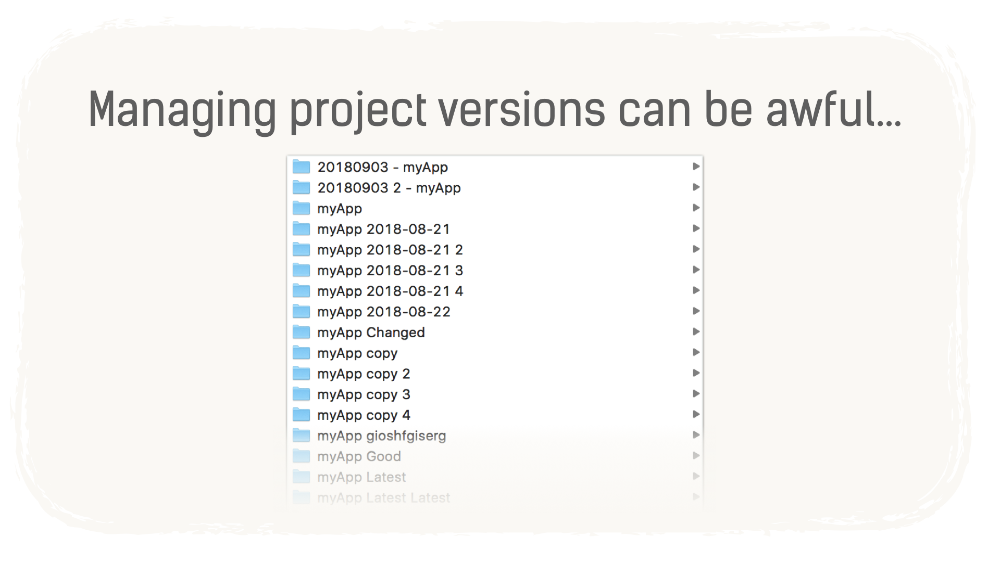
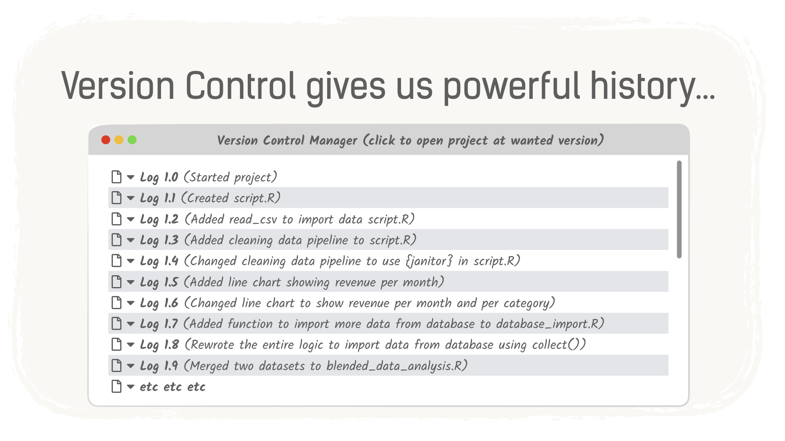

What is Git
Before moving on to learning to code with Python, we would like to introduce the concept of source control, which is a workflow commonly used in Data Science and Software Engineering. You will use source control when working on the Course Projects and you will likely use it for your own data science projects.
Let’s see what we mean by source control.
What is Source Control (and why use it)
Let’s say that you are working on a kind of digital project. It could be:
- your latest Jupyter notebook,
- a mobile app,
- a website,
- or even your novel.
How do you keep track of changes made to your files? And say that you make changes that you don’t like or worse: your changes break your code; how do you make sure you can always go back to a previous version that worked?
This is what source control is all about.
The manual tracking option
Why do you even need source control when you can simply save separated versions of a file?
Let’s look at an example. In a world without source control, this is what your computer files might look like after you worked for some time on a project:

This looks quite messy, but it is very common to end up in this situation. Wouldn’t it be easier if we could have something like an always up-to-date index of the changes we made and that we could use to navigate within the project history? Something like a History tab, but that would track milestones in our project rather than each and every command we type. Something that would look like this:

This kind of history index is what you get when you use source control, it is basically a series of snapshots of your work, taken in various key moments (that you decided were important to capture).
Git
There are a number of different source control systems. First, the most important choice you should make is what source control management (or SCM) app you are going to use. In this course, we will show you the one called Git. There are many others such as Subversion, Team Foundation Server, CVS, Mercurial, and more. Just keep in mind that although Git is the most famous one, it is not the only one.
Git is primarily used for managing code files but it can be used with any type of text-based file. For example, the course that you are currently reading was entirely tracked with Git while it was written.
Git was created in 2005 by Linus Torvalds, the same programmer who created the Linux operating system (although most of the personal computers use Windows or MacOS, Linux is what is used on the large majority of the servers). Git is both free and open-source (anybody can read and modify its code).
There are three ways to use Git:
- You can do everything via commands in a terminal window;
- You can install and use a dedicated Git client that will give you visual interface (GUI);
- You can use Git directly inside Jupyter lab
What we are going to see in this course, is the second option, which is the easiest to grasp. You are then free to experiment using the terminal or by using a Jupyter lab plug-in.
Git can be daunting software at first. It has many capabilities and can do a lot of things. In order for you to work on the projects and submit them, we will concentrate on a very minimal workflow:
- Installing and configuring Git
- Creating a repository (or cloning a repository from the web in our case)
- Adding and committing your files
- Uploading your work online for collaboration and safekeeping using the online platform GitHub.com
Git or Github
What is the difference between Git and Github.com ?
- Git is the software that we use for version control. You can use it on your computer without any obligation to share anything on the internet.
- Github.com is a website that lets you collaborate and backup git projects. As a programmer, sharing projects is not mandatory: you could use Git without ever using Github.com. In our case, we will set it up because this is how you will share your projects with us.